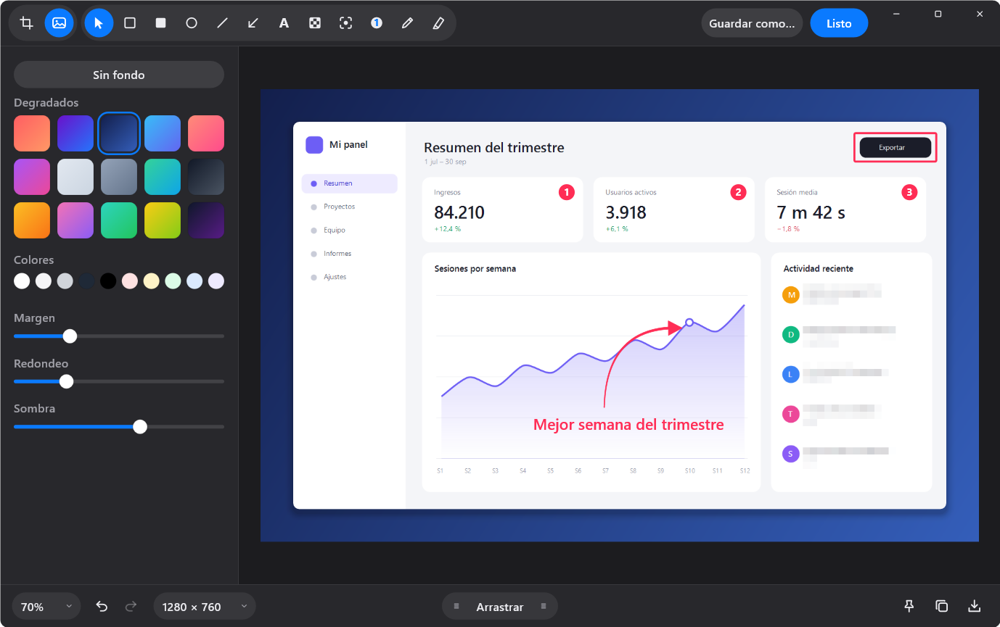
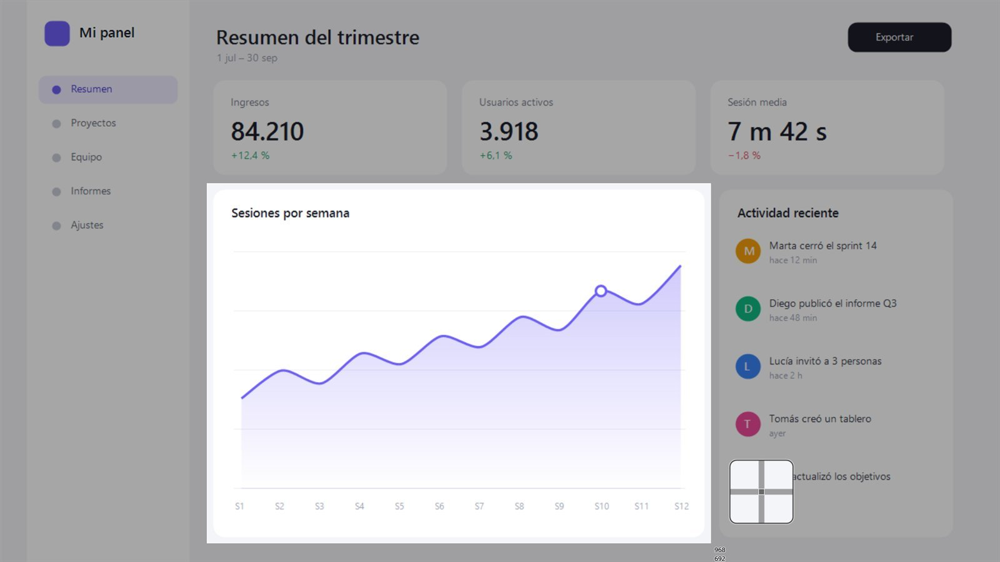
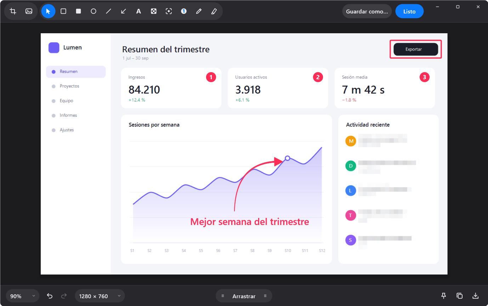
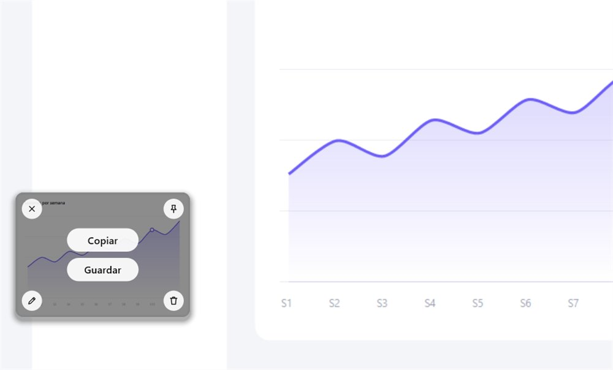
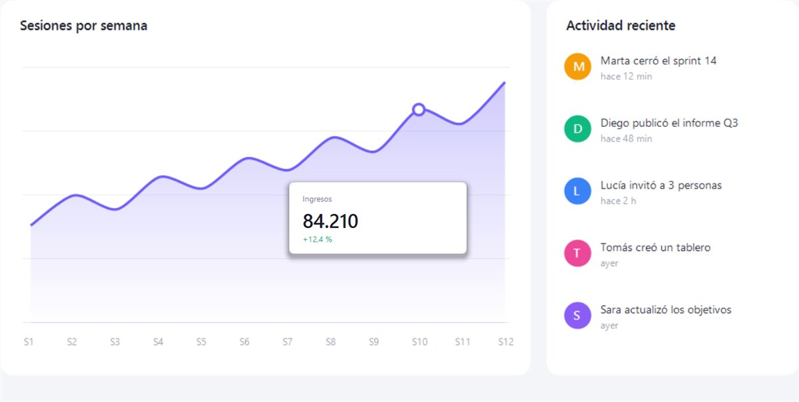
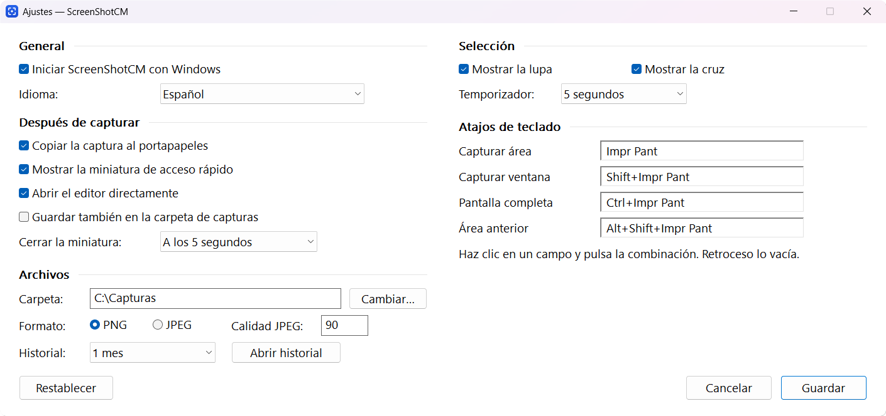

00 · Para Windows 10 y 11
Captura. Anota.
Comparte en un segundo.
Un agente diminuto que vive en la bandeja de Windows. Pulsa Impr Pant, elige un área y la captura ya está en tu portapapeles, lista para anotar.
- 1,8
- MB de memoria en reposo
- 444
- KB de instalador
- 1
- solo .exe, sin dependencias
- 0
- datos enviados a internet
01 · Capturar
La pantalla se congela. Tú eliges.
Al pulsar el atajo, la pantalla se detiene: nada se mueve mientras seleccionas. La lupa y la cruz te dan el píxel exacto, y las medidas te acompañan mientras arrastras.
- Impr PantUn área
- Shift + Impr PantUna ventana
- Ctrl + Impr PantPantalla completa
- Alt + Shift + Impr PantLa misma área otra vez
Shift hace la selección cuadrada, las flechas mueven el puntero píxel a píxel y Espacio cambia a capturar ventanas.

02 · Anotar
Explica con una flecha, no con un párrafo.
El editor se abre solo al capturar. Flechas rectas o curvas, rectángulos, elipses, texto, contadores numerados, foco, lápiz y resaltador. Y el pixelado oculta en un gesto lo que no debe verse.
- Flechas curvas
- Texto editable
- Contadores
- Pixelado
- Foco
- Resaltador
- Recorte
- Deshacer sin límite

03 · Presentar
Lista para la presentación.
Un clic y la captura flota sobre un degradado, con margen, esquinas redondeadas y sombra. Perfecta para documentación, redes o una diapositiva.
04 · Compartir
Ya está en tu portapapeles.
Cada captura aparece en una miniatura en la esquina. Pasa el ratón para copiarla o guardarla, arrástrala directamente a un chat, un correo o un documento, o haz doble clic para anotarla.
- Copiar, guardar, fijar, anotar o eliminar desde la miniatura
- Arrastrar y soltar en cualquier aplicación
- Historial del último mes, siempre a mano

05 · Fijar
Una referencia que no se va.
Fija una captura sobre todas las ventanas mientras trabajas: una cifra, un diseño, un fragmento de código. Arrástrala, cambia su tamaño con la rueda, su opacidad con Ctrl + rueda, o bloquéala para que los clics la atraviesen.

06 · Ligero
Hecho para no notarse.
Escrito en Rust sobre las API nativas de Windows. Sin navegador embebido, sin runtime, sin servicios en segundo plano. Arranca con Windows y espera en la bandeja gastando menos memoria que un icono de escritorio.
- 1,8 MB
- memoria privada en reposo
- ~15 ms
- por fotograma de selección a 3840 × 1080
- 837 KB
- un único ejecutable
- 0
- conexiones de red: todo queda en tu equipo
Atajos configurables, español e inglés, y todo se ajusta desde una sola ventana.

07 · Descargar
Tu próxima captura,
en un segundo.
Descargar para Windows
- Windows 10 y 11 de 64 bits
- Se instala para tu usuario, sin pedir administrador
- Una versión nueva se instala encima de la anterior
- Gratis, sin cuenta y sin publicidad
- Código abierto, licencia GPL-3.0
SHA-256 b9be24314dd42abf79623693ee1e8907a6915834109dcc7239af42bb8612455d